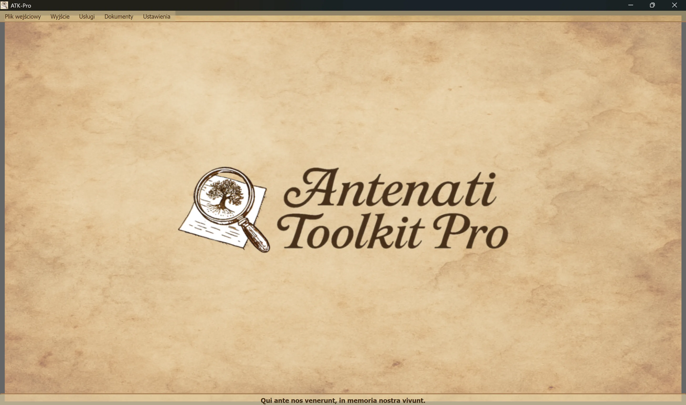

──────────────────── ──────────────────── ──────────────────── ────────────────────
🪟Windows
ATK-Pro-Setup-vx.x.x.exe z oficjalnej strony wydania🐧 Linux
ATK-Pro-vx.x.x.deb (Debian/Ubuntu) lub .tar.gz na stronie Wydaniesudo dpkg -i ATK-Pro-vx.x.x.deb lub kliknij dwukrotnie Nautilus/Files./ATK-Pro z wyodrębnionego folderu🍎macOS
ATK-Pro-vx.x.x.dmg na stronie Wydanie🪟Windows
C:\Program Files\ATK-Pro\C:\Users\[TuoNome]\Documents\ATK-Pro\output\C:\Users\[TuoNome]\Documents\ATK-Pro\input\🐧 Linux
/opt/ATK-Pro/ (deb) lub wyodrębniony folder (.tar.gz)~/Documents/ATK-Pro/output/~/Documents/ATK-Pro/input/🍎macOS
/Applications/ATK-Pro.app~/Documents/ATK-Pro/output/~/Documents/ATK-Pro/input/──────────────────── ──────────────────── ──────────────────── ────────────────────
Dostępne języki to:
którymi, na podstawie danych dostępnych na koniec 2025 roku, szacuje się, że możemy objąć swoim zasięgiem około 98% potomków Włochów oraz społeczności włoskojęzycznych lub włoskojęzycznych rozproszonych po całym świecie.
Przy pierwszym uruchomieniu program automatycznie tworzy następujące foldery:
C:\Users\[TuoNome]\Documents\ATK-Pro\output\C:\Users\[TuoNome]\Documents\ATK-Pro\output\doc\ (dokumenty domyślne)C:\Users\[TuoNome]\Documents\ATK-Pro\output\reg\ (rejestry domyślne)~/Documents/ATK-Pro/output/input\ analogicznie (opcjonalnie, dla pliku wejściowego)Podczas przetwarzania dla pobranych kafelków tworzone są foldery tymczasowe (tiles_canvas_X/) oraz, jeśli wymagane jest PDF, pliki tymczasowe do jego wygenerowania.
Wszystkie foldery i pliki tymczasowe są automatycznie usuwane po zakończeniu przetwarzania.
Pozostają tylko finalnie przetworzone pliki (obrazy w wybranych formatach, PDF, manifest i metadane).
Aby zmienić foldery wyjściowe, użyj Menu → Ustawienia → „Wybierz foldery wyjściowe”. Twoje wybory zostaną zapisane i automatycznie przywrócone do następnej sesji.
Polecenie Ustawienia → Profil zasobów dostosowuje równoległość używaną podczas pobierania, rekonstrukcji obrazu i generowania PDF:
Profil nie zmienia jakości, praw ani ilości pozyskiwanych dokumentów. Limity ostrożnościowe specyficzne dla portalu nadal mają pierwszeństwo.
──────────────────── ──────────────────── ──────────────────── ────────────────────
Główne okno Antenati Toolkit Pro ma prostą i intuicyjną strukturę.

Na dole widnieje łacińskie motto „Qui ante nos veneunt, in memoria nostra vivunt”, upamiętniające znaczenie korzeni i pamięci zbiorowej.
W górnej części okna, pod nagłówkiem:
[Pliki wejściowe] [Wyjście] [Usługi] [Dokumenty] [Ustawienia]
Każde menu zawiera określone przyciski i opcje (patrz następna sekcja).
Zarządza ładowaniem rekordów IIIF:
├─ Esempio input
│ └─ Visualizza il file di esempio (mostra formato coppie: modalità D/R + URL)
├─ Apri input
│ └─ Seleziona un file .txt con i tuoi record IIIF
│ (Deve contenere coppie: modalità D/R su riga 1, URL su riga 2)
└─ Modifica input
└─ Modifica il file input attualmente caricato
(Aggiungi/rimuovi record, cambia URL, salva modifiche)
Zarządza przetwarzaniem i wynikami:
├─ Elabora │ └─ Avvia il download, la ricostruzione e il salvataggio delle immagini │ (Mostra finestra di progresso in tempo reale) ├─ Apri cartella output │ └─ Apre in Esplora Risorse la cartella con i file elaborati └─ Visualizza elaborazioni precedenti └─ Lista dei record già elaborati
Lista zintegrowanych usług:
├─ Ricerca assistita AI │ └─ Suggerisce portali, piste di ricerca e query genealogiche da verificare ├─ Visualizzazione Immagini │ └─ Viewer immagini scaricate e/o PDF generati ├─ Visualizzazione Metadati JSON │ └─ JSON originali e metadati (genealogici, tecnici, EXIF) ├─ OCR Avanzato │ └─ Testi manoscritti ottocenteschi, latino ecclesiastico, tardo-medievali ├─ Traduzione OCR │ └─ Traduzione automatica testi estratti nelle lingue selezionate └─ Esportazione GEDCOM └─ GEDCOM, Gramps, Family Tree Maker, Ancestry, MyHeritage, WikiTree, etc.
Dostęp do zasobów i dokumentacji:
├─ Disclaimer - Clausole legali e termini d'uso ├─ Presentazione autore - Background dell'autore del progetto ├─ Presentazione progetto - Storia, motivazioni, roadmap di ATK-Pro ├─ Guida - Indice principale della guida modulare └─ Informazioni - Versione, copyright, email di contatto
Ogólna konfiguracja programu:
├─ Cambia lingua
│ └─ Seleziona la lingua dell'interfaccia (richiede riavvio)
├─ Seleziona formati immagine
│ └─ Scegli tra PNG, JPG, TIFF e PDF (almeno 1 obbligatorio)
│ PDF può essere selezionato da solo o insieme ai formati immagine
│ La scelta viene memorizzata e pre-selezionata automaticamente alla sessione successiva
├─ Seleziona cartelle output
│ └─ Apre prima la scelta della modalità cartelle, poi le finestre di selezione:
│ • Cartella unica per tutti → una sola cartella per documenti e registri
│ • Cartelle separate doc/reg → una cartella per tutti i doc, una per tutti i reg
│ • Cartella per ogni record → una cartella distinta per ciascun record
│ La modalità e le cartelle vengono memorizzate e ripristinate alla sessione successiva
├─ Esporta configurazione
│ └─ Salva le impostazioni attuali in un file
├─ Importa configurazione
│ └─ Carica un file di impostazioni precedentemente salvato (ripristina tutte le preferenze e percorsi)
├─ Verifica aggiornamenti
│ └─ Controlla la disponibilità di nuove versioni del programma
└─ Chiudi
└─ Termina il programma (mostra banner di supporto PayPal.me)
──────────────────── ──────────────────── ──────────────────── ────────────────────
ATK-Pro jest dostępny w 20 językach:
Język można zmienić w dowolnym momencie poprzez Menu → Ustawienia → Zmień język.
Program wymaga ponownego uruchomienia, aby zastosować nowy język.
Po ponownym uruchomieniu program automatycznie ładuje nowy wybrany język.
Wraz ze zmianą języka tłumaczone są:
Jeśli model domyślny zostanie wycofany lub przestanie być dostępny, ATK-Pro odpytuje katalog widoczny dla poświadczenia, wybiera model ogólnego przeznaczenia zgodny z funkcją i w razie potrzeby z obrazami, a następnie próbuje maksymalnie trzech alternatyw. Mechanizm fallback nie uruchamia się przy błędach limitu, sieci lub uwierzytelniania.
Ręczne wskazanie modelu: model wpisany ręcznie pozostaje wiążący i nigdy nie jest zastępowany automatycznie.